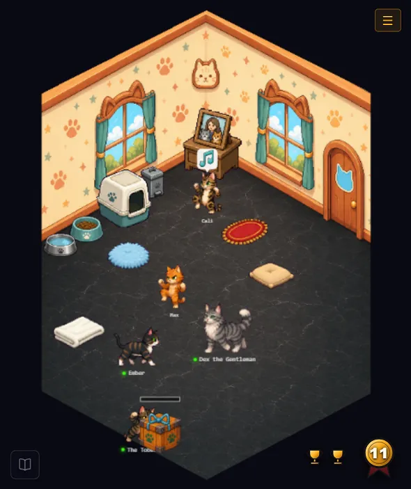

TycoonAgents comes in two forms — a VS Code extension, and a standalone app that runs the same panel in a browser with no VS Code installed (see Chapter 03 for setup). Either form pairs with a harness: Claude Code by default, or Codex (Experimental). None of them run your project or decide how your agents work. Instead, TycoonAgents sits alongside whichever harness you've chosen and observes: every time your orchestrator dispatches a task to a specialist agent, and every time that agent finishes, TycoonAgents' hooks record the event. The panel then replays those events as a scene — each agent is a character on a stage, walking to a build site, hammering away, and celebrating when the task completes.
Specialists aren't limited to your harness's own model either — individual agents can be pointed at other AI vendors for cross-checks or second opinions. That's covered in Chapter 15.
Themes: download official theme packs from tycoonagents-themes.
The important part: this is a visualization of work that is already happening. TycoonAgents does not make your agents faster or smarter, and it never calls an AI model itself at runtime. It reads hook events and draws pictures. That's the whole contract.

Multi-agent work under either harness (Claude Code or Codex) follows a simple split:
This split matters for cost as much as it matters for scene rendering: routing routine work (searching a codebase, running a quick check) to a small, cheap model instead of the expensive one doing the coordinating is the whole reason the delegation pattern exists. TycoonAgents' Metrics and Delegation tabs (Chapter 04, Chapter 11) exist specifically to make that cost split visible.
In the scene, the orchestrator is always the leader character in the first seat — easy to spot even in a crowded stage.
Delegation doesn't happen automatically just because specialist agents
exist — it happens because your project's CLAUDE.md
contains a delegation doctrine: instructions telling the
orchestrator which kinds of work must be routed to which specialist,
and forbidding it from doing that work directly. TycoonAgents installs
this doctrine into CLAUDE.md for you during first-run
setup (Chapter 02), and it's the reason the scene has anything to show
at all — no doctrine, no delegation, no agents walking around.
Codex (Experimental) doesn't read
CLAUDE.md — it reads AGENTS.md instead. When
you switch the harness to Codex, install the Codex hooks from the
panel, or save in the Routing view while Codex is active, TycoonAgents
writes the doctrine into its own managed section of
AGENTS.md, leaving any hand-written content untouched.
Two doctrine modes are available at install time: a flat Orchestrator mode, where one orchestrator dispatches directly to every specialist, and a hierarchical Team Lead mode, where work can fan out through an extra coordination layer. Chapter 02 covers picking between them.
Everything you see on stage — characters, buildings, badges, backgrounds — comes from a theme: a bundle of generated art matched to a creative direction you choose (a neon-city theme, a high-seas theme, whatever fits your project or your mood). A theme is built once, using the Theme Maker's image-generation pipeline (Part II of this handbook), and stored locally. After that, the panel never calls an image API again — it just renders the stored frames. Generating art is the only part of TycoonAgents that talks to an external AI provider, and it only happens when you explicitly ask it to.
TycoonAgents ships with ready-to-use themes so you can see the scene working before you generate anything yourself. Building your own theme is optional, covered starting in Chapter 05.